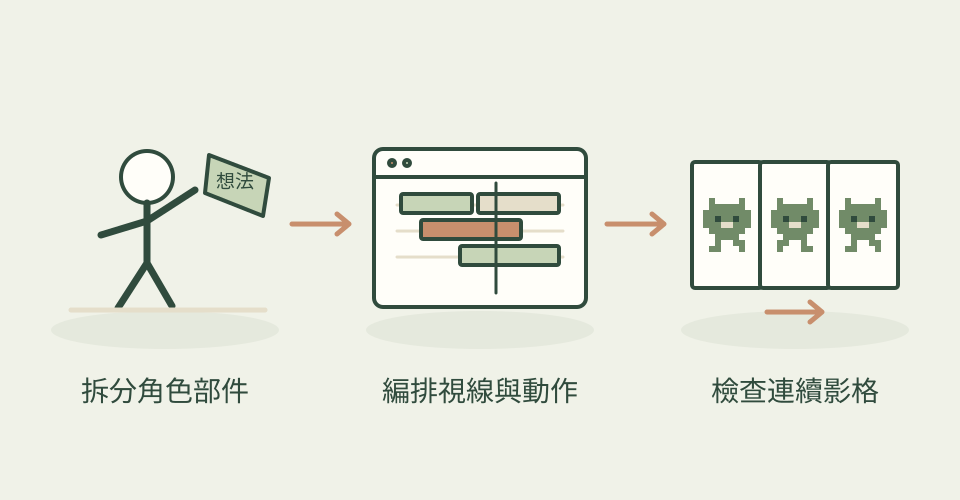

靜態吉祥物動起來，難處常是所有部件一起僵硬移動。這個技能教 AI 把角色、鏡頭與場景分層，讓眼睛看向目標、頭髮稍晚跟上、主要動作之間仍保留呼吸與眨眼。
它怎麼幫忙
先拆出頭、身體、四肢與五官，建立共用時鐘和連續動作曲線；再分配主動作、跟隨動作與小幅待機動作。提供 React Native 的 Reanimated／react-native-svg 引擎與 SwiftUI TimelineView／Canvas 範本，也有參考影片量測工具，最後以關鍵影格和循環檢查修正。
功能快速理解

共用時鐘串起肢體、視線和跟隨動作；本站功能示意，非作者成果。
功能示意・本站繪製 放大查看可以這樣開口
這是一個可依需求修改的委託範例。
替兒童學習 App 做吉祥物獎勵：小男孩落地後踢球，再轉向使用者揮手；眼睛跟著球走，頭髮和衣服比身體稍晚停下。保留能修改動作時間與角色配色的程式，方便延伸下一個獎勵場景。
適合什麼工作
適合 App 設計工程師、插畫與動效設計師，以及需要品牌吉祥物、引導頁、空狀態或獎勵動畫的小團隊。需要有人能調整程式和觀看動作。
開始之前
- 準備工具
- 需要能修改程式的 AI 助手和既有 App 開發環境。React Native 路線用 Reanimated 與 react-native-svg；SwiftUI 路線需 Apple 開發工具。作者離線示例明列 macOS 14+、Swift 編譯器與 ffmpeg；影片量測使用 Python 與 ffmpeg。Web 有方法對照，未附同等完整的獨立範本。
- 使用成本
- 程式、文件與本次作者示例依 MIT 保存聲明。沒有必要的付費圖片或影片生成 API；AI 助手用量、裝置與開發工具仍有成本。渲染速度取決於硬體與場景複雜度。
- 交付內容
- 可修改的角色／場景動畫程式、React Native 或 SwiftUI 動畫部件；作者示例另有離線影片與 GIF 渲染流程。
- 先留意
- 2026-11-09 首次收錄，並非今日發布；儲存庫和目前提交於 10-22 已存在。掃描時 753 星。不是任意 SVG 自動轉完的工具，也不保證所有裝置 60 fps。本站未執行候選程式或驗證 Windows 相容性；主圖為作者以程式繪製並動畫的示例。
作者與來源
本文依作者公開說明整理，沒有實際執行這個專案。功能插圖由本站繪製，原作者範例另行標示；並非本站執行技能的測試結果。GitHub 星數為專案總量，觀察時間為 2026年11月11日 08:34（台北時間）。
與前次快照相比增加 8 星；這不是 GitHub Trending 排名。